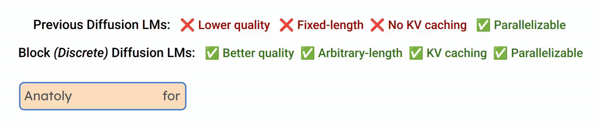

I develop non-autoregressive foundation modeling paradigms and architectures for flexible and efficient sequence generation beyond fixed left-to-right order. My PhD research introduced new diffusion language models for parallel and flexible-order text generation, with first-author publications at ICML, NeurIPS, and ICLR. Notably, I led the development of Block Diffusion, featured as an oral at ICLR 2025, which is adopted by dLLMs at Google, NVIDIA, Meta, ByteDance, and others.
I am interning at NVIDIA Research with Pavlo Molchanov and have previously interned at Runway AI with Anastasis Germanidis. My CV is available here.
I am on the job market starting Summer 2027. Please reach out if you know of research roles in generative modeling that may be a good fit.
Selected Works
Arriola, M., Gokaslan, A., Chiu, J. T., Yang, Z., Qi, Z., Han, J., Sahoo, S. S., Kuleshov, V. Block Diffusion: Interpolating Between Autoregressive and Diffusion Language Models. ICLR 2025 (Oral, Top 1.77%). [Paper] [Blog] [Code] [Slides]

Arriola, M. and Kuleshov, V. Set Diffusion: Interpolating Token Orderings Between Autoregression and Diffusion for Fast and Flexible Decoding. ICML 2026. [Paper] [Blog] [Code]
Arriola, M.*, Schiff, Y.*, Phung, H., Gokaslan, A., Kuleshov, V. Encoder-Decoder Block Diffusion Language Models for Efficient Training and Inference. NeurIPS 2025. [Paper] [Blog] [Code] [Slides]
Arriola, M., Venkat, N., Granskog, J., Germanidis, A. Adapting Autoregressive Vision Language Models for Parallel Diffusion Decoding. Runway Research Blog. [Blog]
News
- Jun-26: I am an organizer for the first workshop on "Non-Autoregressive Language Models for Fast & Flexible Text Generation" at COLM 2026!
- May-26: Set diffusion LMs accepted to ICML 2026. I was also recognized as a Top Reviewer!
- Feb-26: I gave a talk at Meta FAIR on E2D2.
- Jan-26: I advanced to PhD candidacy! I will also be starting an internship at NVIDIA Research!
- Oct-25: Encoder-decoder diffusion LMs paper accepted to NeurIPS 2025. I was also recognized as a Top Reviewer!
- Jun-25: Started a summer internship at Runway in NYC!
- Apr‑25: Presenting Block Diffusion as an oral at ICLR 2025, main track.
- Apr‑25: Invited talk at Amazon AGI on Block Diffusion.